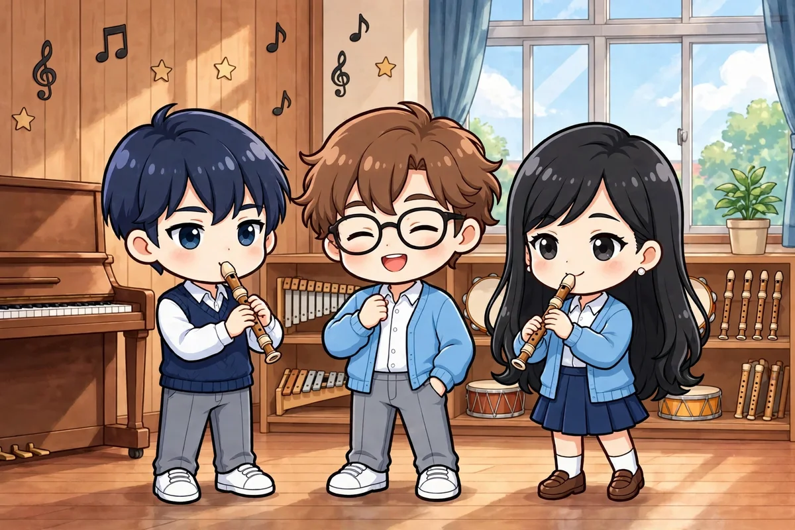
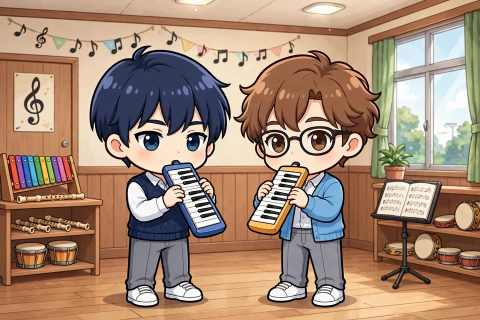

ソプラノリコーダー運指ガイド
低いドから高いラまで、穴のふさぎ方が大きな図で分かります。ジャーマン式・バロック式の両方に対応。ステップ練習と自動ガイド再生、自分の曲の入力もできます。
リコーダーを ひらく ▶リコーダーと鍵盤ハーモニカの れんしゅうアプリ ｜ TT-sensei

どっちの楽器で 演奏する？ 楽器をえらぶと、運指（うんし）や鍵盤（けんばん）の練習ができるよ。音が出るので、まわりに気をつけて使ってね。自分の曲を入れて練習することもできます。
低いドから高いラまで、穴のふさぎ方が大きな図で分かります。ジャーマン式・バロック式の両方に対応。ステップ練習と自動ガイド再生、自分の曲の入力もできます。
リコーダーを ひらく ▶
低いファから高いドまで32鍵盤。本物みたいに、押している間ずっと音が鳴ります。次に弾く鍵盤が光る「光るガイド練習」と、お手本の自動再生、自分の曲の入力もできます。
鍵盤ハーモニカを ひらく ▶